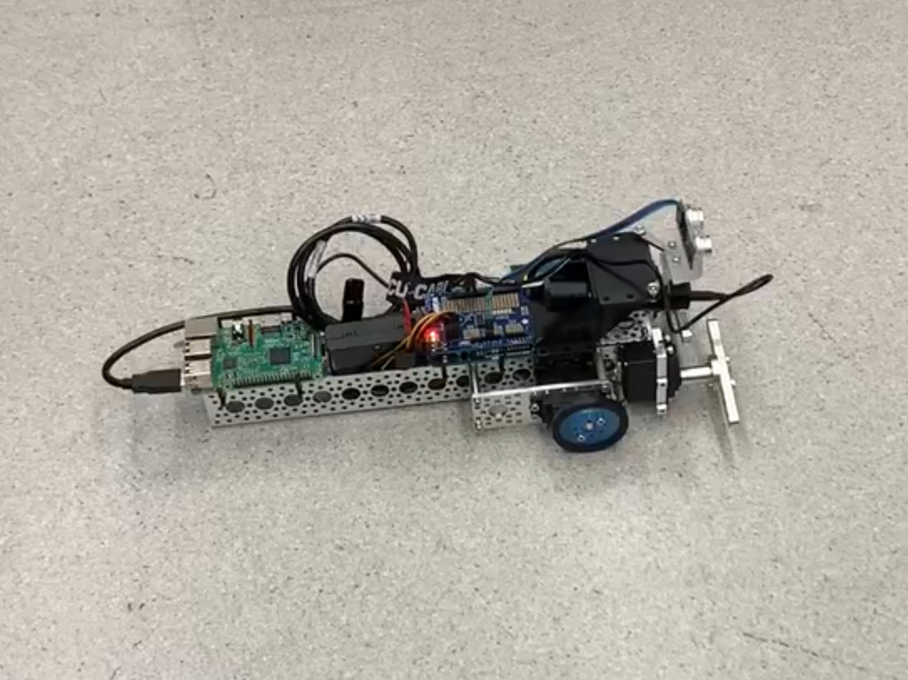

This individualized study was with three other students and Dr. Scott Kelly aiming to implement machine learning in biomimetic robots. Our goal is to have a robot with three segments and two motorized joints teach itself to traverse its environment most efficiently.
We began with a simple Value Iteration alrogithm, moved to Q-learning alrogithms, and are now in the process of incorporating neural networks. Over the course of the initial semester, we implemented Q-learning to teach a four servo, four action SealBot (lift/lower wheels, move forward/backward) how to move most efficiently. The bot was controlled by a Raspberry Pi running the algorithm and sending commands to an Arduino for the control of the servos. We then built a more advanced SnakeBot with a larger action space with intention to implement Deep Q-learning when the semester ended. The project is now continuing through May 2020 as a senior design project; however, I am working on a different senior design project.
